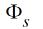
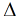
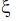
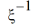
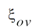
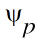
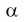
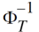
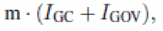
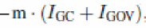

Model Equations
RC Circuit Model for Inversion Charge
Parameter Initializing
Capacitance of Oxide and Body Factors
Initializing Parameters
Temperature-Related Parameters
General Parameters
Parameters Related to Polysilicon and Overlap Regions
Fringing Capacitance
Resistances
Gate Tunneling Parameters
Static Evaluations
where Vc is the voltage across the capacitor C.
Calculation of Surface Potential at the Channel Side
A macro is defined to calculate the surface potential at the channel side with output xs, and inputs: xns, 
ns, G, G2, G-2, 
,, xmrg.
Calculation of Surface Potential at the Overlap Regions
A macro 
xov, and inputs: xg, Gov, Gov2, xmrgov, ,, xg1.
Surface Potential Without Poly Effect
Surface Potential With Poly Effect
The following calculates the poly surface potential when NPO < 1027.
Static Inversion Charge Calculations
The following calculates the surface potential-related variables and inversion charge:
When xg >0, (namely the depletion and inversion regions) following is performed to find qis and qeff:
The normalized static inversion charge is:
Time-Dependent Silicon Surface Potential Without Poly Effect
where Vn is the voltage at the internal time constant node n.
where 
Time-Dependent Poly Surface Potential Calculation Correction
If NPO >= 1027,  =0, otherwise, the following procedure is used:
Quantum Mechanical Corrections
The following Cox,qm calculation is for all regions (xg <=0 and xg >0)
Accumulation Resistance Bias Dependence
Calculation of Gate Tunneling Current
A macro Igate is defined as a function of Igin, IginHVB, Eg, Vov, Dch, Dch, HVB, INVCHIB, INVCHIB, HVB, GC2O, GC3O, GC2HVO, GC3HVO, QCQ, QCQ, HVB, Ig, type, xs, 
b, s, 
b, ov, 
, TYPEP, TYPE, Vb,ig, BOV, and BOV, HVB as shown in the following with Igout as output. It is used for the calculation of gate tunneling current.
Gate Tunneling Current
Initially, IGC=0.0 and IGOV=0.0.
Terminal Currents
DC Currents
Current through the gate Ig,DC= 
Current through the gate Ib,DC= 
Terminal Charges
Noise
Thermal Noise
Thermal noise contributions from rgsal, rgpv, rend, rsub and rac0 are calculated when SWRES = 1.
When SWRES = 0, the noise contribution is 0. This is realized in the code by setting Ggsal, Ggpv, Gend, Gsub, and Gac0 to 0.
Following are the equations for thermal noise calculation:
Shot Noise
Shot noise contributions from the gate tunneling current are calculated when when SWIGATE=1. Following are the equations for shot noise calculation:
Parameter Extraction
Capacitance-Related Model Parameter Extraction
where C0 is the bias-dependent capacitance of an intrinsic device,
and m is the multiplicity factor. Parameters DWQ and DLQ describe the deviations of the effective channel length (L) and Width (W) from their drawn values Lg and Wg.
The total fringe capacitance is given by
Auxiliary Equations
PSP-Based MOS Varactor Model (mosvar)
Return to top